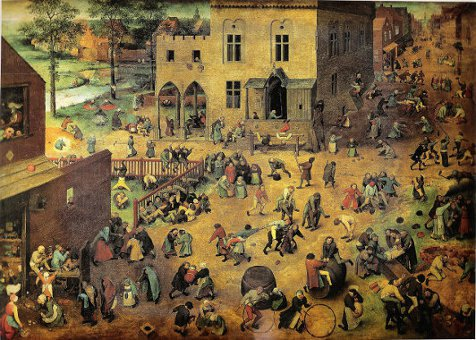

Homepage
http://www.game-theory-class.org/
Schedule
Starts: late 02/2012
Instructor
- Matthew O. Jackson is the William D. Eberle Professor of Economics at Stanford University and an external faculty member of the Santa Fe Institute and a fellow of CIFAR. Jackson's research interests include game theory, microeconomic theory, and the study of social and economic networks, on which he has published many articles and the book Social and Economic Networks. Jackson is a Fellow of the Econometric Society and the American Academy of Arts and Sciences, and his honors include the Social Choice and Welfare Prize, a Guggenheim Fellowship, and the B.E.Press Arrow Prize for Senior Economists. He has served as co-editor of Games and Economic Behavior, the Review of Economic Design, and Econometrica.
- Yoav Shoham received his PhD in computer science from Yale University in 1987, and has been a Professor of Computer Science at Stanford University since then. His research interests include logic-based knowledge representation, game theory, and electronic commerce. He has published numerous articles in these areas, and five books. The last one, Essentials of Game Theory (co-written with K. Leyton-Brown), covers the material in this course. Prof. Shoham has also founded several successful internet companies.
Description
Game theory is a mathematical method for analyzing calculated circumstances, such as in games, where a person’s success is based upon the choices of others. More formally, it is "the study of mathematical models of conflict and cooperation between intelligent rational decision-makers."[1] An alternative term suggested "as a more descriptive name for the discipline" is interactive decision theory.[2] Game theory is mainly used in economics, political science, and psychology, and other, more prescribed sciences, like logic or biology. The subject first addressed zero-sum games, such that one person's gains exactly equal net losses of the other participant(s). Today, however, game theory applies to a wide range of class relations, and has developed into an umbrella term for the logical side of science, to include both human and non-humans, like computers. Classic uses include a sense of balance in numerous games, where each person has found or developed a tactic that cannot successfully better his results, given the other approach.
Provides
- apply to:
- 'games' such as chess, poker, soccer, etc.
- conflict among nations
- political campaigns
- competition among firms
- trading behavior in markets
- peer to peer file-sharing networks
- representing games and strategies
- extensive form (which computer scientists call game trees)
- Bayesian games (modeling things like auctions)
- repeated and stochastic games
Requires
- mathematical thinking and rigorous arguments
- probability theory (e.g.: you should know what a conditional probability is)
- basic calculus (e.g., taking a derivative)
Maintainers
- Matthew Jackson
- Yoav Shoham